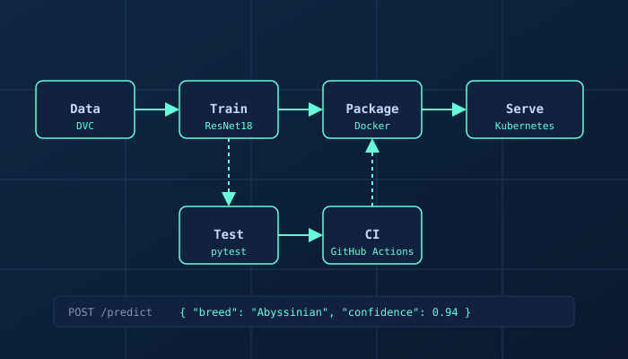
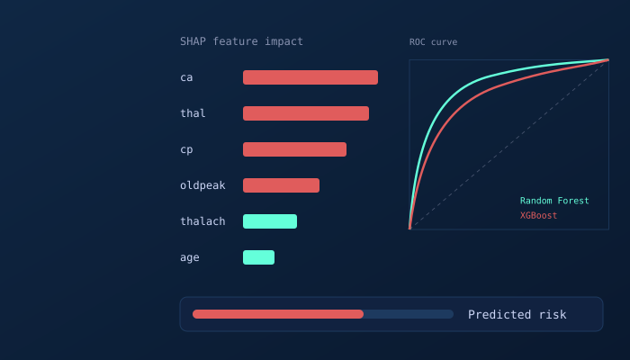
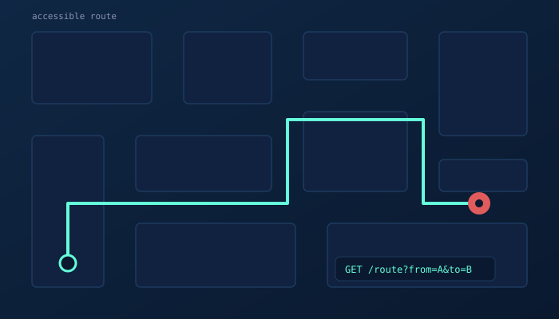

Hi, my name is
I'm a UMBC Computer Science graduate and current M.S. Applied Data Science student. I build machine learning models, data pipelines, and the infrastructure to deploy them.
Scroll Down
I'm a Computer Science graduate of the University of Maryland Baltimore County (Data Science track), and I'm now pursuing my M.S. in Applied Data Science there. I'm based in Baltimore, and I'm drawn to turning raw data into models and tools that people can actually use.
My work spans machine learning, data engineering, and deployment. I've fine-tuned neural networks, built prediction dashboards, and containerized models with Docker and Kubernetes, and I like owning a project from the dataset all the way to a running service.
I also have a systems background, from OS internals and network programming to backend APIs, which keeps me grounded in how software really runs. I'm looking for data science, data engineering, and ML engineering opportunities where I can keep learning and build things that matter.

Featured Project
Fine-tuned a ResNet18 model on the Oxford-IIIT Pet Dataset (37 classes, about 7,400 images) to 90.2% validation accuracy, then built the pipeline around it: DVC data and model versioning, separate Docker images for training and inference, Kubernetes manifests (Deployment, Service, HPA), a FastAPI inference service, and GitHub Actions CI.

Featured Project
End-to-end machine learning pipeline on the UCI Heart Disease dataset using Random Forest and XGBoost (85%+ accuracy), deployed as an interactive Streamlit app for real-time risk scoring, with SHAP explanations showing which factors drive each prediction.

Featured Project
Backend developer on a team capstone for accessible campus navigation. Designed the REST API and database schema and integrated A* pathfinding, taking the project through requirements, implementation, and testing.
PyTorch, scikit-learn, XGBoost, neural networks, transfer learning, SHAP
Docker, Kubernetes, FastAPI, DVC, GitHub Actions CI/CD, Streamlit
Python, SQL, R, MATLAB, pandas, PostgreSQL, Tableau, Power BI
C/C++, Linux/POSIX, Flask, REST APIs, TCP/IP, concurrency
I'm looking for data science, data engineering, and ML engineering roles. If you'd like to talk about a project or opportunity, my inbox is open.
Say Hello